BRA:G1: T1, T2
1469 original tiles. The group retains all child pieces.
The original artwork has 286 edge-connected pieces but 241 same-country edge-or-corner groups. 17 groups join pieces in 10 country scopes.
Grouping never crosses country labels. A corner contact is not an international border. The saved layout is unchanged. G labels identify artwork groups, not necessarily single geographic islands. All original T labels are retained as children.
How to read: Pieces in each merged group share a colour. Red circles mark original corner contacts between different T pieces. Grey pieces do not merge with another piece. Both panels use the same scale. The right panel shows where those same pieces are in the saved layout, even if resizing moved them apart.
Inspect Japan, the Philippines, New Zealand, and Hawaii in particular. A group can represent several real islands. It must be able to receive several source components; it must not be forced to match one source island.
Saved layout · T-to-G table · Corner contacts · Checks and input hashes
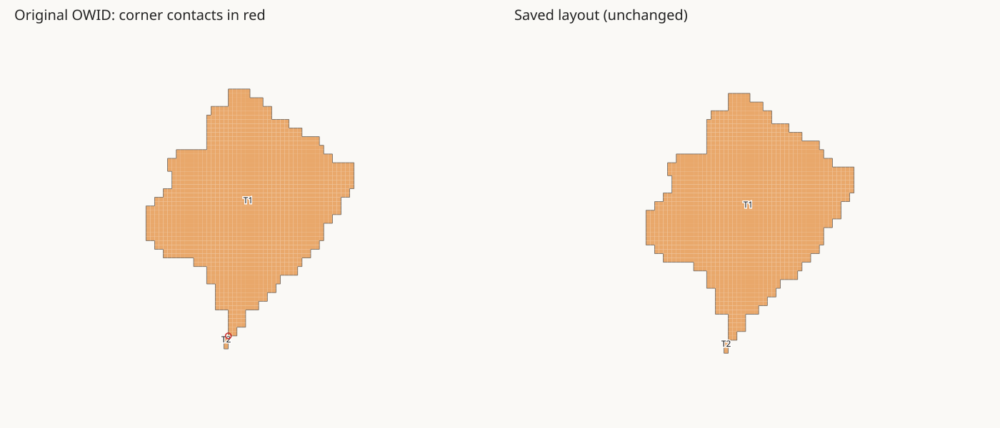
1469 original tiles. The group retains all child pieces.
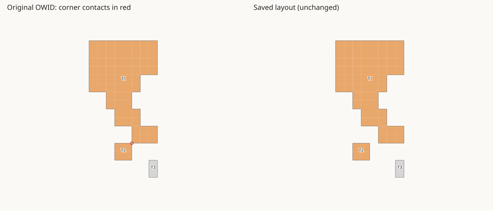
66 original tiles. The group retains all child pieces.
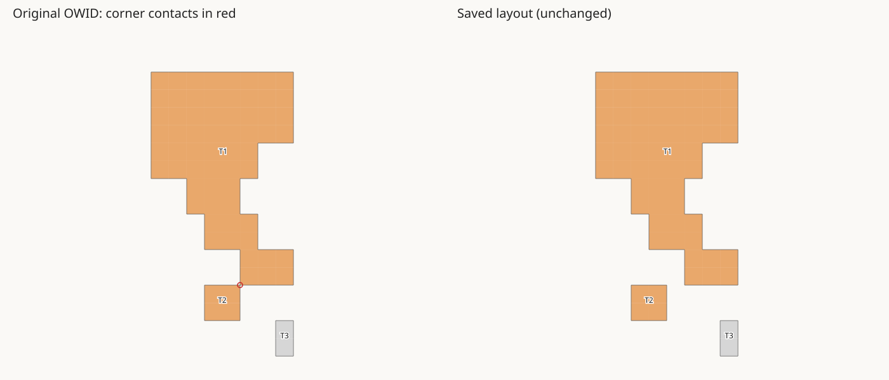
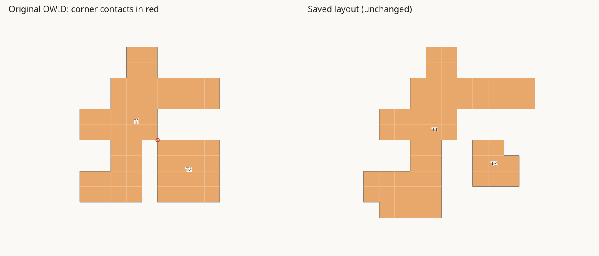
56 original tiles. The group retains all child pieces.
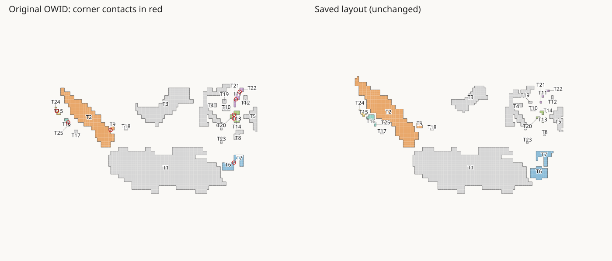
279 original tiles. The group retains all child pieces.
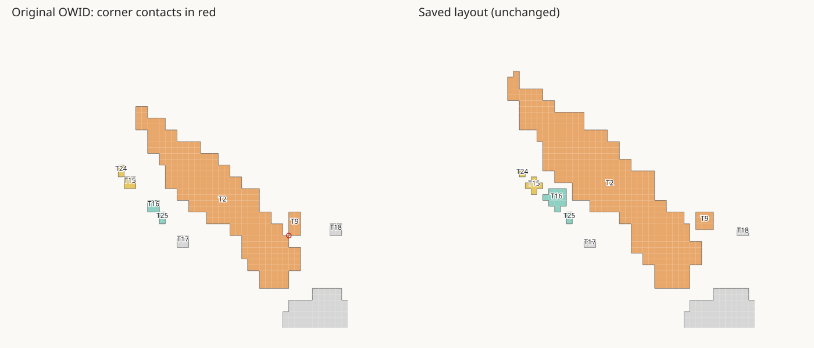
44 original tiles. The group retains all child pieces.
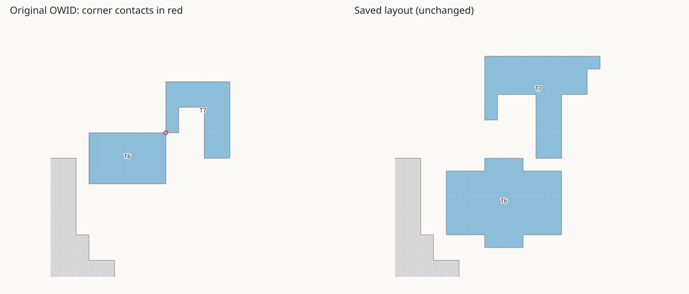
16 original tiles. The group retains all child pieces.
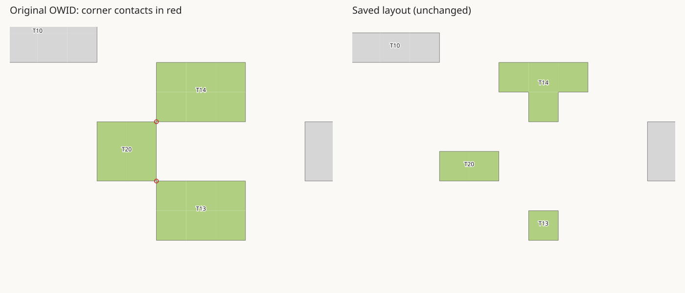
16 original tiles. The group retains all child pieces.
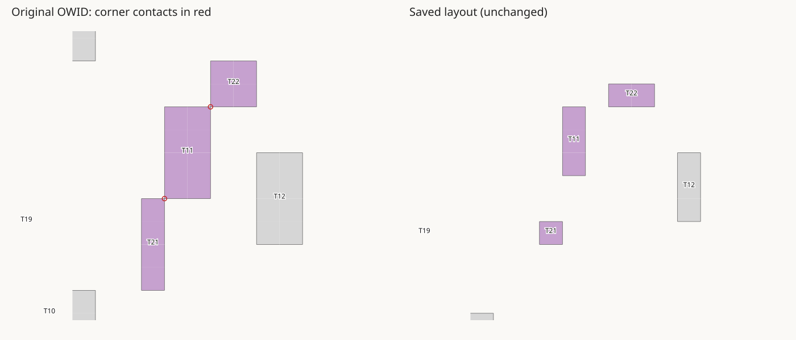
6 original tiles. The group retains all child pieces.
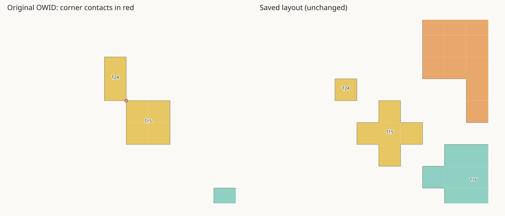
6 original tiles. The group retains all child pieces.
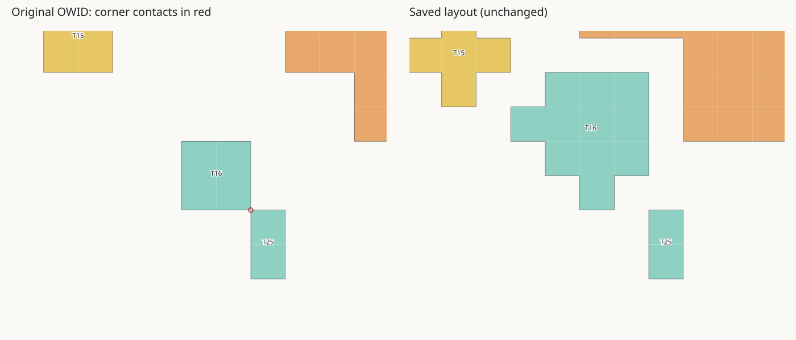
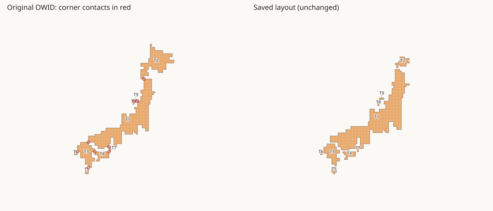
858 original tiles. The group retains all child pieces.
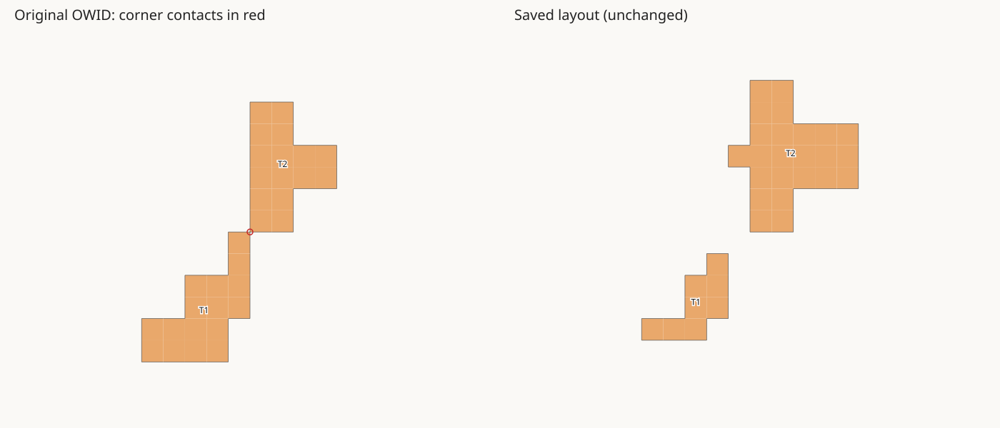
32 original tiles. The group retains all child pieces.
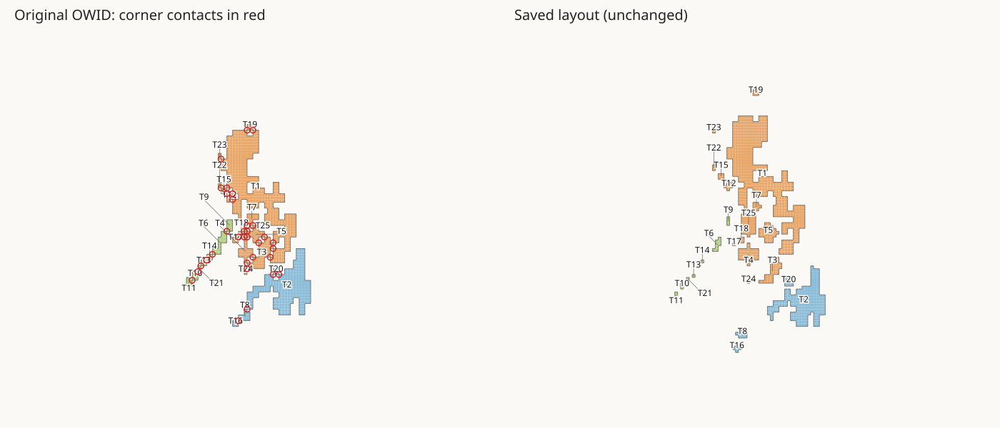
522 original tiles. The group retains all child pieces.
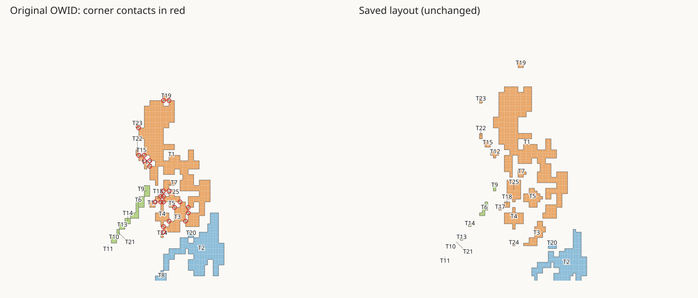
239 original tiles. The group retains all child pieces.
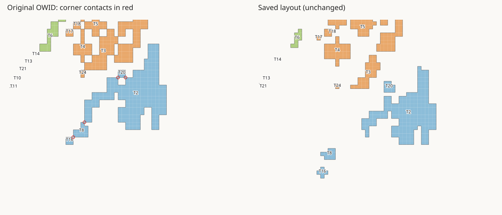
47 original tiles. The group retains all child pieces.
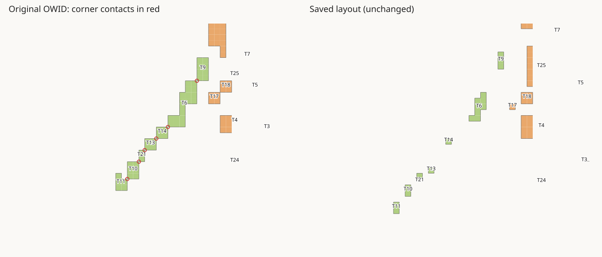
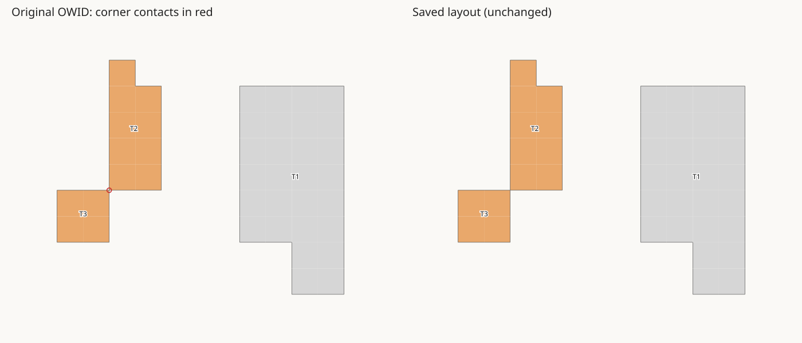
13 original tiles. The group retains all child pieces.
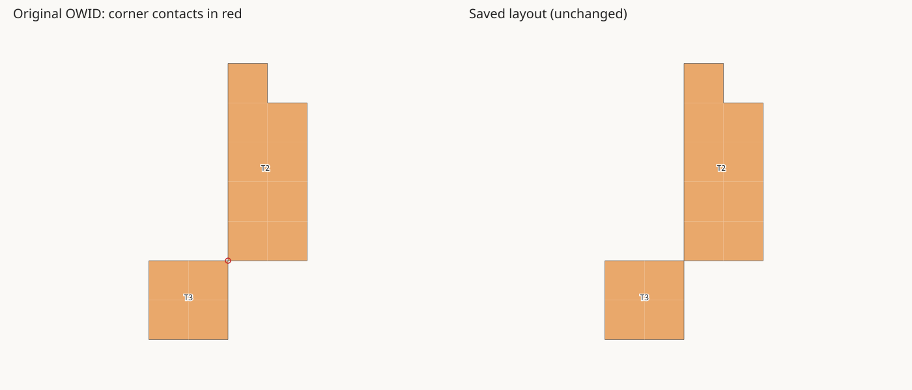
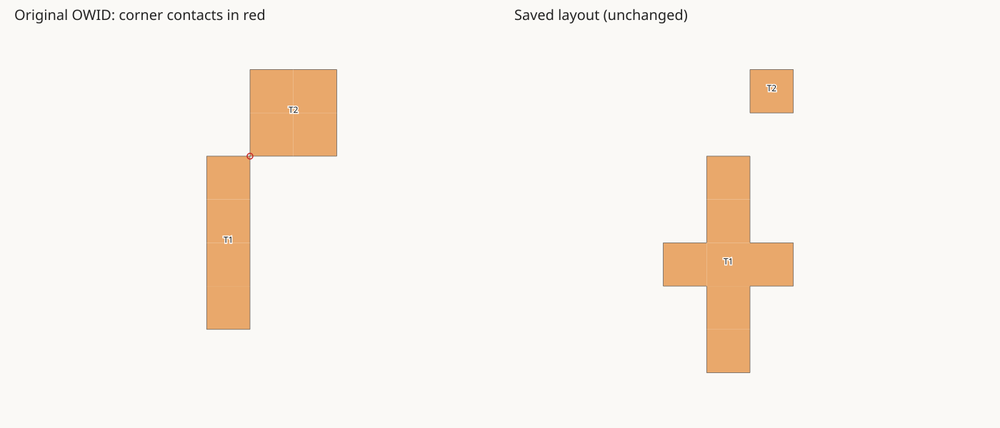
8 original tiles. The group retains all child pieces.
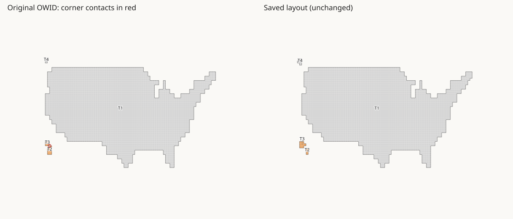
11 original tiles. The group retains all child pieces.
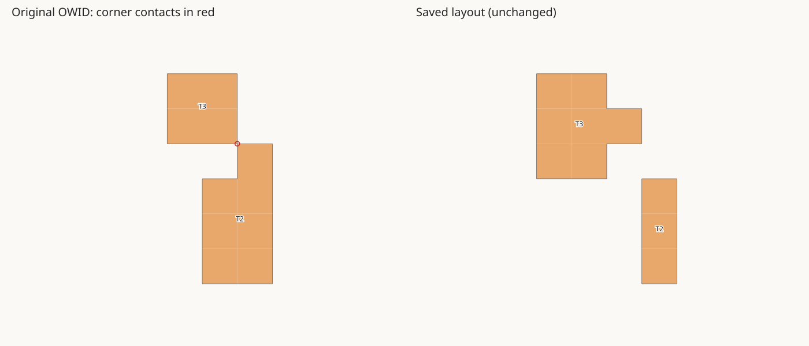
This is a grouping audit. Population assignment and layout resizing have not been rerun.